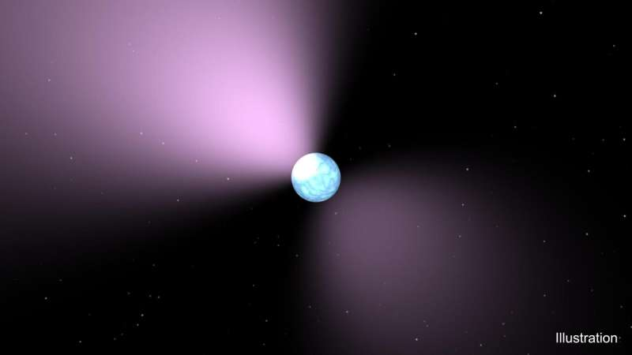
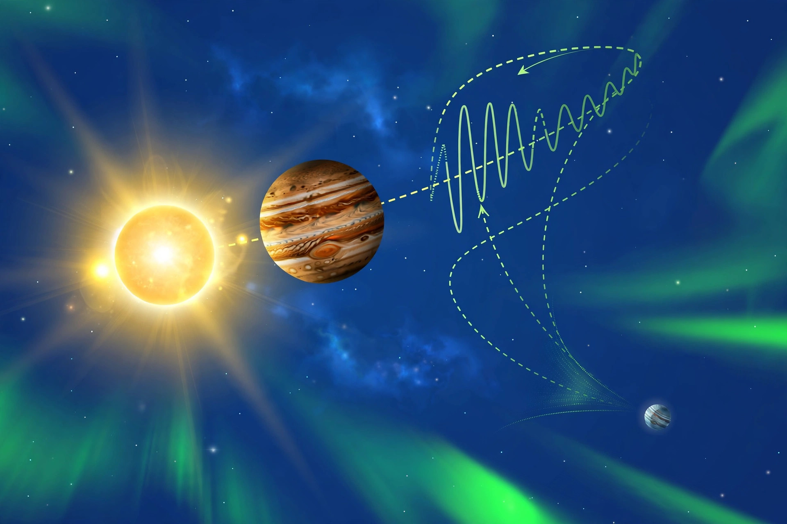

FROM OUR DESK — THE GUMROAD STORE
Digital binders, planners, and small-business packs, made by the same desk that writes these stories. Instant downloads; every purchase keeps this page running. 31 products are live, including:
- Household Emergency Binder — $13
- Household Inventory & Insurance Record Binder — $14
- Dinner, Handled — $19
- Small Landlord Tenant Screening & Move-In Pack — $19
- PostReady — from $25
- ReviewReply — from $29

November 19, 2026
A Code-Breaker's Trick Found a Star Spinning 261 Times a Second
A cryptography-inspired lattice method searched 15 years of NASA Fermi data about a million times faster than before — and found pulsar PSR J1622-7204, which earlier methods missed despite 600 years of computing.
READ THE STORY →November 19, 2026
Toddler Swim Gear for Indoor Waterpark Season: The Winter Edition
Indoor waterpark season runs on different rules: Coast Guard-approved flotation instead of toys, a real swim-diaper system, and the winter exit layer for the walk to the car.
READ THE STORY →
November 18, 2026
Michigan Winter Car Kit: What Stays in the Trunk All Season
Built around equipping the wait, not an expedition: the one-bin trunk kit for Michigan's ordinary bad winter nights - getting unstuck, getting seen, starting a dead car, and staying warm.
READ THE STORY →
November 18, 2026
The Entryway Drop Zone: Boots, Bags, and Shift Gear in a Small House
No mudroom required: assign every arriving object a home within five steps of the door - boot tray, rack, hooks, landing strip, one basket - in a footprint small enough for a hallway.
READ THE STORY →
November 18, 2026
Freezer-to-Table Rotation: Stop Losing Food You Already Paid For
Freezer amnesia is a rotation problem, not a storage problem. Label it, rotate it, eat the front first: the first-in, first-out system that stops throwing away food you already paid for.
READ THE STORY →
November 18, 2026
One Bag, Two Kids: The Infant + Toddler Outing System That Doesn't Fall Apart
Two kids, one bag, no digging: pack by child in color-coded kits, add a shared layer, and make restocking a two-minute rule instead of a weekly archaeology dig.
READ THE STORY →
November 18, 2026
Michigan Winter Home Readiness: Power Outages, Pipes, and Heat Backup Without the Panic Buy
A Michigan winter outage gets expensive later: burst pipes, lost food, a house dropping below freezing. The short list of cheap, boring things to do before the storm, so a bad night stays a bad night.
READ THE STORY →
November 18, 2026
Recall Radar: Why the Pantry Needs a System, Not a Junk Drawer
Food recalls are announced every week, and almost none of them reach the kitchens they apply to. The gap isn't awareness — it's that nobody has a list of what's actually in their pantry to check against.
READ THE STORY →
November 18, 2026
One Month of Dinners, Decided Once
"What's for dinner?" is not a cooking problem — it's a decision problem, and it gets asked 30 times a month. The rotation system that answers it once, and why the structure matters more than the recipes.
READ THE STORY →
November 18, 2026
The 2 A.M. Test: What Your Household Needs Within Arm's Reach
Emergencies don't schedule themselves for a calm Saturday afternoon. The real question is whether the information your household needs exists in one known place when it's dark, loud, and urgent.
READ THE STORY →
November 18, 2026
Running a Mystery Game Night That Actually Works
The difference between a mystery night people talk about for a month and one that fizzles by the second drink is almost never the mystery. It's the hosting. Here's the structure that works.
READ THE STORY →
November 18, 2026
How a Print-and-Play Cold Case Actually Works
No actors, no game master, no app — just a folder of evidence and a table of people who think they can read it better than the detective did. Inside the mechanics of the case-file mystery.
READ THE STORY →
November 18, 2026
GTA VI Is Already Out in New Zealand — How Tonight's Global Rollout Actually Works
Rockstar is launching Grand Theft Auto VI the slow way: midnight, one country at a time. New Zealand started playing at 6 AM Eastern today, and the wave reaches the United States at midnight Eastern tonight. Here is how the rollout moves, hour by hour.
READ THE STORY →November 18, 2026
That GTA VI Box on the Shelf Has No Disc In It — Read This Before You Buy
The physical edition of Grand Theft Auto VI is a download code in a box — there is no disc. For disc-console owners, collectors, and anyone gift-wrapping a copy this week, that changes what you are actually buying, and why the code should be redeemed today, not tonight.
READ THE STORY →
November 18, 2026
GTA VI Editions Compared: $79.99, $99.99, a $20 Upgrade — and a $399.99 Box With No Game In It
Grand Theft Auto VI sells in exactly two editions, plus an upgrade path and one very expensive merchandise box that does not include the game at all. Every verified US price, what each tier actually adds, and who each one is for.
READ THE STORY →
November 17, 2026
Two Monster Black Holes Were Already Shining in One Galaxy Less Than a Billion Years After the Big Bang
Astronomers found the most distant compact quasar pair ever identified — two actively feeding supermassive black holes, about 1.5 billion and 400 million solar masses, separated by roughly 18,100 light-years in a galaxy seen just 900 million years after the Big Bang.
READ THE STORY →
November 16, 2026
Earthquake Watch: The Week's Biggest Quake Was Felt by 10 People — a Tiny Utah Quake Was Felt by 383
The public USGS-tracked feeds for the week ending Nov 16, 2026: 296 quakes of magnitude 2.5 or greater, one M6.6 off Indonesia that almost nobody felt, and a magnitude 3.4 near Enterprise, Utah that 383 people reported. Roundup only — never predictions.
READ THE STORY →
November 15, 2026
The Magnetic Tiles That Started It All: Magna-Tiles Classic 32-Piece
Every December the same question arrives from parents of preschoolers: which building toy actually survives childhood? The Magna-Tiles Classic 32-piece set has been answering it since 2005. Here's what it actually is, and what it isn't.
READ THE STORY →
November 15, 2026
The Step Up From Binoculars: Celestron AstroMaster 70AZ, Honestly
Our binoculars guide ends with "telescope later." For readers who are at "later," the AstroMaster 70AZ is the budget refractor that has held the beginner slot for years. Here's what it actually is, and what it isn't.
READ THE STORY →
November 15, 2026
Giant Binoculars, Honest Verdict: The Celestron SkyMaster 15x70
Readers ask what gear we'd point at the night sky first. Our answer hasn't changed in years: a big pair of astronomy binoculars — and the SkyMaster 15x70 is the budget classic. Here's what it actually is, and what it isn't.
READ THE STORY →
November 15, 2026
Snap Circuits Jr. SC-100: The STEM Kit That Teaches Real Circuits
Most "electronics kits for kids" are plastic toys with a battery hidden inside. Elenco's Snap Circuits Jr. is the real thing — actual switches, motors, and speakers that snap into working circuits. A gear guide for the young experimenters in the house.
READ THE STORY →
November 14, 2026
Something Invisible Is Orbiting a Red Giant — and It May Be Too Heavy to Exist
Astronomers have found a red giant with an unseen companion in the system J0008+0128. The invisible object weighs an estimated 1.8 to 2.8 Suns — right in the puzzling mass gap between the heaviest neutron stars and the lightest black holes.
READ THE STORY →November 13, 2026
Euclid Just Handed Us the First Draft of the Universe's 3D Map
The Euclid Consortium and ESA have released DR1 Foundation — 13 months of observations covering a patch of sky equal to 9,500 full moons, with light from more than a billion objects. It is the foundation for the largest-ever 3D map of the cosmos, built to attack the dark universe: dark matter, dark energy, and why the expansion of the universe is accelerating.
READ THE STORY →
November 11, 2026
Webb's Little Red Dots May Be Black Holes Being Born
Since the James Webb Space Telescope opened its eye, astronomers have been puzzled by hundreds of tiny red specks in the early universe that no theory predicted. New simulations from a University of Portsmouth-led team say they may be primeval galaxies where the first supermassive black holes are forming by direct collapse — a model that fits, not a sighting.
READ THE STORY →
November 10, 2026
The Disappearing Planet: A Hidden Neighbor Is Tilting TOI-2535 b Out of View
For seven years, NASA's TESS watched a hot Jupiter called TOI-2535 b cross its star every 8.25 days. Then the transits got shorter, shallower, and late — and in 2026 they stopped. A UCLA-led team says an unseen neighbor is wobbling its orbit like a top.
READ THE STORY →Showing the latest 25 — browse the full archive →